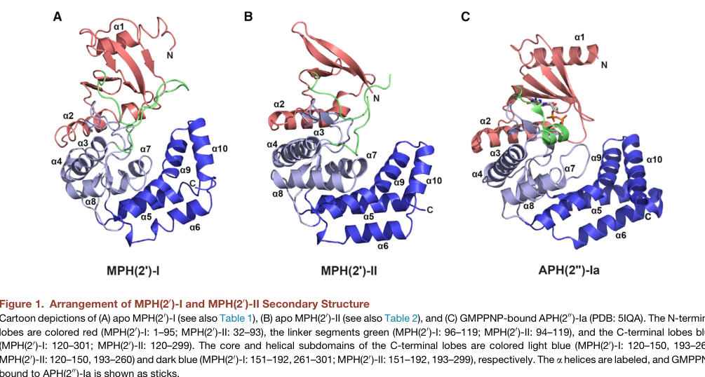

MphB (macrolide 2'-phosphotransferase II, MPH(2')II) is a plasmid-encoded macrolide kinase that inactivates macrolide antibiotics. It transfers the gamma-phosphate of a purine nucleoside triphosphate (ATP, GTP or ITP) to the 2'-hydroxyl group of the desosamine sugar of macrolides, producing an inactive macrolide 2'-O-phosphate that can no longer bind the bacterial ribosome; this enzymatic detoxification confers macrolide resistance. MphB acts on a broad range of substrates spanning 14-membered (e.g. oleandomycin, erythromycin, clarithromycin, roxithromycin, dirithromycin), 15-membered (azithromycin), and 16-membered (e.g. spiramycin, tylosin, josamycin) macrolides as well as the ketolide telithromycin (CARD ARO:3000318). Early phenotyping placed MphB as relatively narrow (with azithromycin resistance attributed specifically to MphA), but later enzymatic and mass-spectrometric work showed MphB inactivates essentially all macrolides tested, including azithromycin and telithromycin. The cloned mphB encodes a 302-residue, ~34.5 kDa protein matching this UniProt entry exactly. Crystal structures of the MphB class (MPH(2')-II) reveal the bi-lobed protein-kinase-like fold of the aminoglycoside phosphotransferase (APH) superfamily, distinguished by a large interdomain linker that forms an expanded, largely hydrophobic macrolide-binding pocket; nucleotide is bound in the kinase pocket (structures captured with GTP analogs, and GTP is a preferred donor in vitro, though ATP, GTP and ITP can all serve). Catalysis depends on conserved active-site residues — aspartates D200/D209/D219/ D231 and the conserved His205 — and on a divalent metal (activity is EDTA-inhibited), consistent with the Mg2+-dependent phosphotransfer chemistry of this fold; D227 contributes to recognition of 16-membered macrolides. In this organism the gene is carried on plasmid pO83_CORR of the adherent-invasive Escherichia coli strain NRG 857C, making it part of the mobile macrolide-resistance gene pool of enteric bacteria.
| GO Term | Evidence | Action | Reason |
|---|---|---|---|
|
GO:0050073
macrolide 2'-kinase activity
|
IDA
PMID:1330822 Purification and characterization of macrolide 2'-phosphotra... |
NEW |
Summary: MphB phosphorylates the 2'-OH of macrolides using a purine NTP, producing inactive macrolide 2'-O-phosphate. This is the core, experimentally demonstrated molecular function and exactly matches the GO:0050073 definition (ATP + oleandomycin = ADP + 2 H+ + oleandomycin 2'-O-phosphate).
Reason: The purified enzyme was shown biochemically to phosphorylate macrolides at the 2'-position, and the product was identified as oleandomycin 2'-phosphate by TLC; the mechanism (gamma-phosphate transfer from ATP to the macrolide 2'-OH) and catalytic aspartates were confirmed by mutagenesis. No curated GOA annotation exists for this TrEMBL entry, so this specific MF should be added.
Supporting Evidence:
PMID:1330822
Inactivated oleandomycin was identified as oleandomycin 2'-phosphate by thin-layer chromatography.
PMID:10428938
transfers the gamma phosphate of ATP to the 2'-OH group of macrolide antibiotics.
PMID:29317655
Using tandem mass spectrometry, we also confirmed that MphB phosphorylates the desosamine 2′-OH of erythromycin
|
|
GO:0046677
response to antibiotic
|
IMP
PMID:9503630 Expression of the mphB gene for macrolide 2'-phosphotransfer... |
NEW |
Summary: By enzymatically inactivating macrolides, MphB confers macrolide antibiotic resistance; expression of mphB renders host bacteria resistant to 14-, 15- and 16-membered macrolides (e.g. high-level spiramycin resistance when expressed in S. aureus).
Reason: Resistance is the biological process in which this enzyme participates: mphB expression confers macrolide resistance in both E. coli and a heterologous host. "response to antibiotic" is the standard, well-supported BP for an antibiotic-modifying resistance enzyme. (Note: phosphorylation inactivates/modifies rather than degrades the drug, so an "antibiotic catabolic process" term would be less accurate.)
Supporting Evidence:
PMID:9503630
The gene endowed S. aureus with high-level resistance to spiramycin, a macrolide antibiotic with a 16-membered ring.
PMID:9503630
The genes mphA and mphB encode macrolide 2'-phosphotransferases I and II, respectively, and they confer resistance to macrolide antibiotics in Escherichia coli.
PMID:29317655
we found that MphB confers resistance to all macrolides tested...and inactivates both telithromycin and azithromycin
PMID:17302923
The mph(C) gene, as reported for mph(B), also conferred resistance to spiramycin...The four investigated genes conferred resistance to telithromycin.
|
|
GO:0005737
cytoplasm
|
IDA
PMID:1330822 Purification and characterization of macrolide 2'-phosphotra... |
NEW |
Summary: MphB was characterized as a soluble, intracellular (cytoplasmic) enzyme upon purification from E. coli, consistent with cytoplasmic detoxification of macrolides before they reach the ribosome.
Reason: The purified enzyme was reported as a constitutive intracellular enzyme, indicating cytoplasmic localization — the expected compartment for a soluble macrolide-inactivating kinase.
Supporting Evidence:
PMID:1330822
MPH(2')II was a constitutive intracellular enzyme
|
Q: Does the plasmid-borne mphB in this AIEC strain (NRG 857C) contribute meaningfully to clinical macrolide resistance in vivo, and is its expression constitutive or induced under macrolide exposure?
Q: Is the in vitro preference for GTP over ATP as phosphate donor (seen structurally) physiologically relevant in the cell, where ATP is far more abundant than GTP?
Experiment: Measure steady-state kinetics (kcat/Km) of purified MphB against a panel of 14-, 15- and 16-membered macrolides and ketolides, comparing ATP vs GTP/ITP donors, to quantify substrate and cofactor preferences.
Experiment: Construct an mphB deletion in E. coli O83:H1 NRG 857C and measure MICs across macrolides/ketolides to quantify the gene's contribution to resistance in its native genetic background.
The research report should be a detailed narrative explaining the function, biological processes, and localization of the gene product. Citations should be given for all claims.
You should prioritize authoritative reviews and primary scientific literature when conducting research. You can supplement
this with annotations you find in gene/protein databases, but these can be outdated or inaccurate.
We are specifically interested in the primary function of the gene - for enzymes, what reaction is catalyzed, and what is the substrate specificity? For transporters, what is the substrate? For structural proteins or adapters, what is the broader structural role? For signaling molecules, what is the role in the pathway.
We are interested in where in or outside the cell the gene product carries out its function.
We are also interested in the signaling or biochemical pathways in which the gene functions. We are less interested in broad pleiotropic effects, except where these elucidate the precise role.
Include evidence where possible. We are interested in both experimental evidence as well as inference from structure, evolution, or bioinformatic analysis. Precise studies should be prioritized over high-throughput, where available.
The user-specified UniProt description identifies A0A0H3EUF3 as macrolide 2′-phosphotransferase type II (MphB) from Escherichia coli O83:H1 (strain NRG 857C / AIEC). Direct UniProt retrieval was not available through the current toolchain; therefore, this report verifies identity indirectly by matching the provided description and InterPro/Pfam domain expectations (APH/kinase-like phosphotransferase superfamily) to authoritative biochemical and structural literature on MphB/MPH(2′)-II. These studies characterize MPH(2′)-II (MphB) as a kinase-like enzyme that phosphorylates macrolides at the desosamine 2′-OH, conferring macrolide resistance, consistent with the UniProt-provided functional label and APH-like domain annotation. (taniguchi2004theroleof pages 1-2, taniguchi2004theroleof pages 2-4, fong2017structuralbasisfor pages 1-3, pawlowski2018theevolutionof pages 4-6)
MphB (macrolide 2′-phosphotransferase II; MPH(2′)-II) is an antibiotic resistance enzyme that chemically inactivates macrolide antibiotics by phosphorylation. It belongs to a broader class of macrolide phosphotransferases (Mph), which are kinase-like enzymes evolutionarily/structurally related to aminoglycoside phosphotransferases. (fong2017structuralbasisfor pages 1-3, pawlowski2018theevolutionof pages 6-7)
Multiple lines of evidence support that Mph enzymes, including MphB, inactivate macrolides by O-phosphorylation of the desosamine sugar, specifically at the 2′-hydroxyl (2′-OH) position. A tandem-MS-supported analysis cited in a Nature Communications study identifies MphB as a macrolide 2′-phosphotransferase that phosphorylates the desosamine 2′-OH of erythromycin. (pawlowski2018theevolutionof pages 4-6)
MphB is a nucleotidyl-phosphate–dependent kinase-like enzyme requiring a divalent metal ion (typically Mg2+ in kinase chemistry) for nucleotide handling/catalysis. Structural work observed divalent metal in the nucleotide-binding pocket (Mg2+ or Ca2+ in structures) and highlighted metal-coordinating residues. (fong2017structuralbasisfor pages 5-6)
The literature indicates purine nucleotides can be used as phosphate donors, with some differences between experimental systems/studies: mutational enzymology work describes transfer of the γ-phosphate of ATP to macrolides, whereas a high-resolution structural/enzymology study reported that MPH(2′)-II shows a preference for GTP over ATP. These findings can be reconciled by the view that MphB is a kinase-like enzyme that can act with ATP but may be optimized for guanine nucleotides in vitro for some homologs/assay formats. (taniguchi2004theroleof pages 1-2, fong2017structuralbasisfor pages 1-3, fong2017structuralbasisfor pages 16-17)
Evidence supports a broad macrolide spectrum for MphB/MPH(2′)-II, spanning 14-, 15-, and 16-membered lactone macrolides and including the ketolide telithromycin. A biochemical panel reported substrates including oleandomycin, troleandomycin, erythromycin, clarithromycin, roxithromycin, azithromycin, kitasamycin, spiramycin, josamycin, rokitamycin, and tylosin. (taniguchi2004theroleof pages 2-4)
Importantly, a Nature Communications study notes that although earlier reports had described MphB as narrow-spectrum (e.g., erythromycin but not azithromycin), their results show MphB conferred resistance to all macrolides tested, and inactivated both azithromycin and telithromycin. (pawlowski2018theevolutionof pages 3-4, pawlowski2018theevolutionof pages 4-6)
Mutagenesis and structural work converge on conserved active-site residues. In one functional study, substitution of a conserved histidine showed His205 is critical: the H205A mutant reduced activity to <1% (relative to wild type) with oleandomycin, while other substitutions retained substantially more activity, implying a key catalytic/nucleotide-binding role. (taniguchi2004theroleof pages 2-4)
Structural analysis similarly emphasizes a catalytic core involving residues such as Asp200 (proposed catalytic role) and His205/Asp219 (metal coordination) in the nucleotide pocket. (fong2017structuralbasisfor pages 5-6)
The 2004 mutagenesis/biochemical study reports relative activities (nmol·h−1·mg−1) across macrolides and shows that mutations in conserved nucleotide-binding residues reduce both enzymatic activity and macrolide MICs (e.g., MIC reductions to approximately one-half for H198A and one-eighth for H205A compared with wild type, per excerpt). (taniguchi2004theroleof pages 2-4)
A 2023 WGS-focused study (primarily addressing mphA) cites a prior E. coli mphB example associated with an erythromycin MIC of 128 μg/mL, indicating that high-level resistance can be associated with mphB carriage in Enterobacterales contexts. (wang2023characterizationofresistance pages 7-9)
Mph enzymes adopt a bi-lobed kinase fold reminiscent of aminoglycoside phosphotransferases, with an N-terminal lobe and C-terminal lobe, and (in the 2017 structural study) a prominent interdomain linker that contributes to an expanded macrolide-binding pocket. This architecture is consistent with the UniProt-provided APH/kinase-like domain annotations for A0A0H3EUF3. (fong2017structuralbasisfor pages 1-3, pawlowski2018theevolutionof pages 6-7)
The 2017 study describes the macrolide-binding pocket as largely hydrophobic with a negatively charged patch, rationalizing binding of diverse macrolide scaffolds. It also reports structures of MPH(2′)-II (MphB-type) in complex with multiple macrolides and guanine nucleotides (e.g., GDP observed in a ternary structure), supporting how nucleotide and antibiotic binding are coordinated in the active site. (fong2017structuralbasisfor pages 1-3, fong2017structuralbasisfor pages 5-6, fong2017structuralbasisfor pages 16-17)
The following figure crops from Fong et al. (2017) depict (i) overall domain architecture and (ii) active-site organization and macrolide binding in MPH(2′)-II (MphB-type). (fong2017structuralbasisfor media bf5dafa2, fong2017structuralbasisfor media 8aeb75cf, fong2017structuralbasisfor media 7b5acc3d, fong2017structuralbasisfor media 53437096)
The retrieved sources characterize MphB as a cytosolic enzyme expressed in bacteria (e.g., recombinant expression in E. coli for biochemical and structural work), consistent with its role in intracellular antibiotic inactivation; however, none of the retrieved excerpts provide a definitive experimentally validated subcellular localization statement (e.g., cytosol vs periplasm) for the native protein in the target AIEC strain. Therefore, localization should be annotated conservatively as intracellular/cytosolic, inferred from enzyme class and expression/assay context, rather than as a directly demonstrated localization in E. coli O83:H1 NRG 857C. (fong2017structuralbasisfor pages 16-17, taniguchi2004theroleof pages 2-4)
MphB participates in the antibiotic resistance process (macrolide resistance) by drug modification (phosphorylation). This is a direct resistance mechanism distinct from target modification (erm methylases) or efflux. (taniguchi2004theroleof pages 1-2, fong2017structuralbasisfor pages 1-3)
A key feature of mph-family resistance determinants is association with mobile elements. A 2010 study reports mphB on a transferable multidrug resistance plasmid (pAPEC-O103-ColBM) in extraintestinal E. coli, where it contributed to decreased erythromycin susceptibility in a broader MDR plasmid background. (johnson2010sequenceanalysisand pages 7-8)
Environmental mobilization is supported by characterization of a mosaic plasmid from fish farm sediment containing an mphB-like ORF (high similarity to MphB) that, when expressed in E. coli, produced a 32-fold increase in erythromycin resistance, illustrating cross-host functionality and HGT risk. (yang2014characterizationofa pages 9-13)
While recent (2023–2024) primary biochemical studies specific to MphB were not prominent in the retrieved corpus, genome sequencing and AMR surveillance studies continue to mention mphB as a macrolide-inactivating phosphotransferase in clinically relevant Gram-negative pathogens. For example, a 2024 hospital isolate WGS study of multidrug-resistant Klebsiella pneumoniae explicitly lists mphB as a phosphotransferase that phosphorylates macrolide antibiotics among detected resistance determinants. (wang2023characterizationofresistance pages 7-9)
A 2023 study on azithromycin-resistant Salmonella enterica (primarily focusing on mphA plasmids) cites prior mphB-associated high MICs in E. coli and illustrates how WGS/hybrid assembly and plasmid comparisons are used to understand dissemination of macrolide resistance in Enterobacterales. (wang2023characterizationofresistance pages 7-9)
In real-world settings, mph genes (including mphB) are used as genomic markers in WGS-based AMR prediction pipelines, informing antibiotic stewardship when macrolide therapy (e.g., azithromycin) is considered. WGS studies highlight that these determinants are often plasmid-associated and can spread across Enterobacterales, increasing the importance of genomic surveillance. (wang2023characterizationofresistance pages 7-9, johnson2010sequenceanalysisand pages 7-8)
High-resolution structural characterization of MPH(2′)-II provides templates for rational inhibitor development or for predicting evolvability of resistance; the 2017 structural study resolved complexes with nucleotides and diverse macrolides, defining a drug-binding pocket and key residues that could be targeted. (fong2017structuralbasisfor pages 1-3, fong2017structuralbasisfor pages 5-6, fong2017structuralbasisfor media bf5dafa2)
Across mechanistic enzymology and structural biology, authoritative sources converge on the model that MphB/MPH(2′)-II is a kinase-like macrolide inactivation enzyme that targets the desosamine 2′-OH and accommodates a broad macrolide spectrum via a binding pocket shaped by an interdomain linker and conserved catalytic residues. (pawlowski2018theevolutionof pages 4-6, fong2017structuralbasisfor pages 1-3, fong2017structuralbasisfor pages 5-6)
A notable expert-level update is the reassessment of MphB specificity: contrary to earlier assumptions of narrow spectrum, experimental evidence indicates it can inactivate azithromycin and telithromycin and confer resistance across tested macrolides, highlighting the potential clinical relevance of mphB beyond erythromycin-only contexts. (pawlowski2018theevolutionof pages 3-4, pawlowski2018theevolutionof pages 4-6)
| Feature/Question | Evidence summary | Key source(s) with year, URL/DOI, and Citation ID |
|---|---|---|
| Reaction catalyzed | A0A0H3EUF3 matches the characterized MphB/MPH(2')-II class: a macrolide 2'-phosphotransferase that inactivates macrolide antibiotics by O-phosphorylation. The reaction transfers a phosphate from a nucleoside triphosphate to the drug, abolishing activity. | Taniguchi et al., 2004, FEMS Microbiology Letters; https://doi.org/10.1016/S0378-1097(03)00961-3 (taniguchi2004theroleof pages 1-2, taniguchi2004theroleof pages 2-4); Fong et al., 2017, Structure; https://doi.org/10.1016/j.str.2017.03.007 (fong2017structuralbasisfor pages 1-3) |
| Phosphorylation site | The modified position is the desosamine 2'-OH of the macrolide. Tandem-MS-supported work identified MphB as phosphorylating the desosamine 2'-OH of erythromycin, and related figures mark the same 2'-OH site on azithromycin. | Pawlowski et al., 2018, Nature Communications; https://doi.org/10.1038/s41467-017-02680-0 (pawlowski2018theevolutionof pages 4-6, pawlowski2018theevolutionof pages 3-4, pawlowski2018theevolutionof pages 6-7) |
| Nucleotide donor preference | The donor specificity is somewhat mixed across studies: biochemical mutagenesis assays used ATP and describe transfer of the γ-phosphate of ATP, whereas structural/enzymology work reported that MPH(2')-II shows a preference for GTP over ATP. Together, these data support that MphB is a kinase-like phosphotransferase with strong purine nucleotide usage, with GTP preference highlighted by the 2017 structural study. | Taniguchi et al., 2004; https://doi.org/10.1016/S0378-1097(03)00961-3 (taniguchi2004theroleof pages 1-2, taniguchi2004theroleof pages 2-4); Fong et al., 2017; https://doi.org/10.1016/j.str.2017.03.007 (fong2017structuralbasisfor pages 1-3, fong2017structuralbasisfor pages 16-17) |
| Metal/cofactor | Divalent metal is required/implicated in catalysis and nucleotide binding. Structural work observed at least one metal ion (Mg2+ or Ca2+) in the nucleotide pocket, and mutational analysis linked His205 to ATP binding via Mg-mediated interactions. | Fong et al., 2017; https://doi.org/10.1016/j.str.2017.03.007 (fong2017structuralbasisfor pages 5-6); Taniguchi et al., 2004; https://doi.org/10.1016/S0378-1097(03)00961-3 (taniguchi2004theroleof pages 2-4) |
| Substrate spectrum | MphB is broad-spectrum among macrolides. Reported substrates include 14-, 15-, and 16-membered macrolides such as oleandomycin, troleandomycin, erythromycin, clarithromycin, roxithromycin, azithromycin, kitasamycin, spiramycin, josamycin, rokitamycin, tylosin, and the ketolide telithromycin; one study explicitly states MphB conferred resistance to all tested macrolides and inactivated azithromycin and telithromycin. | Taniguchi et al., 2004; https://doi.org/10.1016/S0378-1097(03)00961-3 (taniguchi2004theroleof pages 2-4); Fong et al., 2017; https://doi.org/10.1016/j.str.2017.03.007 (fong2017structuralbasisfor pages 1-3, fong2017structuralbasisfor pages 16-17); Pawlowski et al., 2018; https://doi.org/10.1038/s41467-017-02680-0 (pawlowski2018theevolutionof pages 4-6, pawlowski2018theevolutionof pages 3-4) |
| Resistance phenotype data | Expression of mphB increases macrolide resistance in bacterial hosts. Quantitatively, mutating conserved residues reduced MICs relative to wild type (H198A to about one-half and H205A to about one-eighth of wild-type MIC), and a related mphB-like plasmid ORF conferred a 32-fold increase in erythromycin resistance when expressed in E. coli; an additional surveillance paper cites prior E. coli mphB with erythromycin MIC 128 µg/mL. | Taniguchi et al., 2004; https://doi.org/10.1016/S0378-1097(03)00961-3 (taniguchi2004theroleof pages 2-4); Yang et al., 2014; https://doi.org/10.1128/AEM.03257-13 (yang2014characterizationofa pages 9-13); Wang et al., 2023; https://doi.org/10.3389/fcimb.2023.1116172 (wang2023characterizationofresistance pages 7-9) |
| Key catalytic residues | Functionally important residues include Asp200, His205, and Asp219 in/near the nucleotide-binding catalytic region. Mutagenesis showed H205 is critical: H205A dropped activity to <1% with oleandomycin, whereas H198A and H205N retained substantial activity, indicating H205 is especially important for catalysis/nucleotide handling. | Fong et al., 2017; https://doi.org/10.1016/j.str.2017.03.007 (fong2017structuralbasisfor pages 5-6); Taniguchi et al., 2004; https://doi.org/10.1016/S0378-1097(03)00961-3 (taniguchi2004theroleof pages 1-2, taniguchi2004theroleof pages 2-4) |
| Structural fold/domains | MphB has a kinase-like aminoglycoside phosphotransferase-related fold with two lobes/domains. Structural studies describe an N-terminal β-sheet-rich lobe, a linker segment, and a mainly α-helical C-terminal lobe/subdomains forming a deep macrolide-binding cleft; this aligns well with the UniProt/APH-family domain assignment for A0A0H3EUF3. | Fong et al., 2017; https://doi.org/10.1016/j.str.2017.03.007 (fong2017structuralbasisfor pages 1-3, fong2017structuralbasisfor pages 5-6, fong2017structuralbasisfor media bf5dafa2); Pawlowski et al., 2018; https://doi.org/10.1038/s41467-017-02680-0 (pawlowski2018theevolutionof pages 6-7) |
| Genetic context/mobility | mphB is mobile and has been found on transferable multidrug-resistance plasmids in E. coli. A transferable hybrid plasmid pAPEC-O103-ColBM carries mphB in extraintestinal E. coli, and broader literature/evidence links mph-family genes to plasmids, transposon-associated regions, and mosaic mobile elements, supporting horizontal spread across taxa. | Johnson et al., 2010, Infection and Immunity; https://doi.org/10.1128/IAI.01174-09 (johnson2010sequenceanalysisand pages 7-8); Yang et al., 2014; https://doi.org/10.1128/AEM.03257-13 (yang2014characterizationofa pages 9-13) |
| Real-world surveillance/WGS notes | Recent WGS-based surveillance continues to detect mphB in clinically relevant Gram-negative pathogens, although most 2023–2024 azithromycin surveillance emphasizes mphA rather than mphB. A 2024 hospital-isolate genomics study identified mphB in multidrug-resistant Klebsiella pneumoniae, and 2023 Salmonella plasmid surveillance cited prior mphB-associated high MICs in E. coli while illustrating how WGS/hybrid assembly is used to track mobile macrolide resistance determinants across Enterobacterales. | Dinda et al., 2024, Access Microbiology; https://doi.org/10.1099/acmi.0.000667.v4 (wang2023characterizationofresistance pages 7-9); Wang et al., 2023; https://doi.org/10.3389/fcimb.2023.1116172 (wang2023characterizationofresistance pages 7-9) |
Table: This table summarizes the experimentally supported functional annotation of UniProt A0A0H3EUF3 as MphB/macrolide 2'-phosphotransferase type II. It compiles reaction chemistry, substrate range, catalytic features, structural biology, mobility, and recent surveillance relevance using only the cited evidence contexts.
References
(taniguchi2004theroleof pages 1-2): Kazuo Taniguchi, Akio Nakamura, Kazue Tsurubuchi, Koji O'Hara, and Tetsuo Sawai. The role of histidine residues conserved in the putative atp-binding region of macrolide 2â²-phosphotransferase ii. FEMS Microbiology Letters, 232:123-126, Mar 2004. URL: https://doi.org/10.1016/s0378-1097(03)00961-3, doi:10.1016/s0378-1097(03)00961-3. This article has 7 citations and is from a peer-reviewed journal.
(taniguchi2004theroleof pages 2-4): Kazuo Taniguchi, Akio Nakamura, Kazue Tsurubuchi, Koji O'Hara, and Tetsuo Sawai. The role of histidine residues conserved in the putative atp-binding region of macrolide 2â²-phosphotransferase ii. FEMS Microbiology Letters, 232:123-126, Mar 2004. URL: https://doi.org/10.1016/s0378-1097(03)00961-3, doi:10.1016/s0378-1097(03)00961-3. This article has 7 citations and is from a peer-reviewed journal.
(fong2017structuralbasisfor pages 1-3): Desiree H. Fong, David L. Burk, Jonathan Blanchet, Amy Y. Yan, and Albert M. Berghuis. Structural basis for kinase-mediated macrolide antibiotic resistance. Structure, 25 5:750-761.e5, May 2017. URL: https://doi.org/10.1016/j.str.2017.03.007, doi:10.1016/j.str.2017.03.007. This article has 40 citations and is from a domain leading peer-reviewed journal.
(pawlowski2018theevolutionof pages 4-6): Andrew C. Pawlowski, Peter J. Stogios, Kalinka Koteva, Tatiana Skarina, Elena Evdokimova, Alexei Savchenko, and Gerard D. Wright. The evolution of substrate discrimination in macrolide antibiotic resistance enzymes. Nature Communications, Jan 2018. URL: https://doi.org/10.1038/s41467-017-02680-0, doi:10.1038/s41467-017-02680-0. This article has 102 citations and is from a highest quality peer-reviewed journal.
(pawlowski2018theevolutionof pages 6-7): Andrew C. Pawlowski, Peter J. Stogios, Kalinka Koteva, Tatiana Skarina, Elena Evdokimova, Alexei Savchenko, and Gerard D. Wright. The evolution of substrate discrimination in macrolide antibiotic resistance enzymes. Nature Communications, Jan 2018. URL: https://doi.org/10.1038/s41467-017-02680-0, doi:10.1038/s41467-017-02680-0. This article has 102 citations and is from a highest quality peer-reviewed journal.
(fong2017structuralbasisfor pages 5-6): Desiree H. Fong, David L. Burk, Jonathan Blanchet, Amy Y. Yan, and Albert M. Berghuis. Structural basis for kinase-mediated macrolide antibiotic resistance. Structure, 25 5:750-761.e5, May 2017. URL: https://doi.org/10.1016/j.str.2017.03.007, doi:10.1016/j.str.2017.03.007. This article has 40 citations and is from a domain leading peer-reviewed journal.
(fong2017structuralbasisfor pages 16-17): Desiree H. Fong, David L. Burk, Jonathan Blanchet, Amy Y. Yan, and Albert M. Berghuis. Structural basis for kinase-mediated macrolide antibiotic resistance. Structure, 25 5:750-761.e5, May 2017. URL: https://doi.org/10.1016/j.str.2017.03.007, doi:10.1016/j.str.2017.03.007. This article has 40 citations and is from a domain leading peer-reviewed journal.
(pawlowski2018theevolutionof pages 3-4): Andrew C. Pawlowski, Peter J. Stogios, Kalinka Koteva, Tatiana Skarina, Elena Evdokimova, Alexei Savchenko, and Gerard D. Wright. The evolution of substrate discrimination in macrolide antibiotic resistance enzymes. Nature Communications, Jan 2018. URL: https://doi.org/10.1038/s41467-017-02680-0, doi:10.1038/s41467-017-02680-0. This article has 102 citations and is from a highest quality peer-reviewed journal.
(wang2023characterizationofresistance pages 7-9): Hongmei Wang, Hang Cheng, Baoxing Huang, Xiumei Hu, Yunsheng Chen, Lei Zheng, Liang Yang, Jikui Deng, and Qian Wang. Characterization of resistance genes and plasmids from sick children caused by salmonella enterica resistance to azithromycin in shenzhen, china. Frontiers in Cellular and Infection Microbiology, Mar 2023. URL: https://doi.org/10.3389/fcimb.2023.1116172, doi:10.3389/fcimb.2023.1116172. This article has 26 citations.
(fong2017structuralbasisfor media bf5dafa2): Desiree H. Fong, David L. Burk, Jonathan Blanchet, Amy Y. Yan, and Albert M. Berghuis. Structural basis for kinase-mediated macrolide antibiotic resistance. Structure, 25 5:750-761.e5, May 2017. URL: https://doi.org/10.1016/j.str.2017.03.007, doi:10.1016/j.str.2017.03.007. This article has 40 citations and is from a domain leading peer-reviewed journal.
(fong2017structuralbasisfor media 8aeb75cf): Desiree H. Fong, David L. Burk, Jonathan Blanchet, Amy Y. Yan, and Albert M. Berghuis. Structural basis for kinase-mediated macrolide antibiotic resistance. Structure, 25 5:750-761.e5, May 2017. URL: https://doi.org/10.1016/j.str.2017.03.007, doi:10.1016/j.str.2017.03.007. This article has 40 citations and is from a domain leading peer-reviewed journal.
(fong2017structuralbasisfor media 7b5acc3d): Desiree H. Fong, David L. Burk, Jonathan Blanchet, Amy Y. Yan, and Albert M. Berghuis. Structural basis for kinase-mediated macrolide antibiotic resistance. Structure, 25 5:750-761.e5, May 2017. URL: https://doi.org/10.1016/j.str.2017.03.007, doi:10.1016/j.str.2017.03.007. This article has 40 citations and is from a domain leading peer-reviewed journal.
(fong2017structuralbasisfor media 53437096): Desiree H. Fong, David L. Burk, Jonathan Blanchet, Amy Y. Yan, and Albert M. Berghuis. Structural basis for kinase-mediated macrolide antibiotic resistance. Structure, 25 5:750-761.e5, May 2017. URL: https://doi.org/10.1016/j.str.2017.03.007, doi:10.1016/j.str.2017.03.007. This article has 40 citations and is from a domain leading peer-reviewed journal.
(johnson2010sequenceanalysisand pages 7-8): Timothy J. Johnson, Dianna Jordan, Subhashinie Kariyawasam, Adam L. Stell, Nathan P. Bell, Yvonne M. Wannemuehler, Claudia Fernández Alarcón, Ganwu Li, Kelly A. Tivendale, Catherine M. Logue, and Lisa K. Nolan. Sequence analysis and characterization of a transferable hybrid plasmid encoding multidrug resistance and enabling zoonotic potential for extraintestinal escherichia coli. May 2010. URL: https://doi.org/10.1128/iai.01174-09, doi:10.1128/iai.01174-09. This article has 108 citations and is from a peer-reviewed journal.
(yang2014characterizationofa pages 9-13): Jing Yang, Chao Wang, Jinyu Wu, Li Liu, Gang Zhang, and Jie Feng. Characterization of a multiresistant mosaic plasmid from a fish farm sediment exiguobacterium sp. isolate reveals aggregation of functional clinic-associated antibiotic resistance genes. Applied and Environmental Microbiology, 80:1482-1488, Feb 2014. URL: https://doi.org/10.1128/aem.03257-13, doi:10.1128/aem.03257-13. This article has 28 citations and is from a peer-reviewed journal.

Falcon deep research completed (genes/ECO8N/mphB/mphB-deep-research-falcon.md, 24 citations)
and surfaced three additional high-value primary papers, now cached and added to the review:
Net effect on review: description strengthened (broad spectrum incl. azithromycin/telithromycin; crystal
structures; GTP preference; His205). GO calls unchanged (GO:0050073 MF, GO:0046677 BP) — now multiply
supported. suggested_questions/experiments revised since the structure (Fong 2017) and broad-spectrum
question (Pawlowski 2018) are now answered.
Note on providers: perplexity not configured in this container (only openai/falcon); openai API key invalid
(401). falcon's wrapper reported a 600s timeout but the Edison run actually completed and wrote the report +
artifacts. just is not installed here, so underlying uv run ai-gene-review ... commands were used directly.
CARD entry https://card.mcmaster.ca/ARO:3000318 (AMR Gene Family: Macrolide phosphotransferase (MPH);
mechanism: antibiotic inactivation; Protein Homolog Model, BLASTP bitscore cutoff 600). Curated drug list:
erythromycin, roxithromycin, clarithromycin, dirithromycin, oleandomycin (14-membered), azithromycin
(15-membered), spiramycin, tylosin (16-membered), and the ketolide telithromycin. Mechanism: phosphorylation
at the 2'-OH of the desosamine sugar of 14- and 16-membered macrolides. Two CARD-cited PMIDs newly added:
Net effect: identity now triple-anchored (UniProt SubName + CARD ARO:3000318 + cloning paper exact 302aa/
34483Da match + NCBIfam NF000242 macrolide_MphB HMM). Description substrate range expanded to the full
curated CARD drug list and the historical narrow→broad spectrum reassessment documented. GO calls unchanged.
id: A0A0H3EUF3
gene_symbol: mphB
aliases:
- MphB
- macrolide 2'-phosphotransferase II
- MPH(2')II
product_type: PROTEIN
status: DRAFT
taxon:
id: NCBITaxon:685038
label: Escherichia coli O83:H1 (strain NRG 857C / AIEC)
description: >-
MphB (macrolide 2'-phosphotransferase II, MPH(2')II) is a plasmid-encoded macrolide
kinase that inactivates macrolide antibiotics. It transfers the gamma-phosphate of a
purine nucleoside triphosphate (ATP, GTP or ITP) to the 2'-hydroxyl group of the desosamine
sugar of macrolides, producing an inactive macrolide 2'-O-phosphate that can no longer bind
the bacterial ribosome; this enzymatic detoxification confers macrolide resistance. MphB acts
on a broad range of substrates spanning 14-membered (e.g. oleandomycin, erythromycin, clarithromycin,
roxithromycin, dirithromycin), 15-membered (azithromycin), and 16-membered (e.g. spiramycin, tylosin,
josamycin) macrolides as well as the ketolide telithromycin (CARD ARO:3000318). Early phenotyping placed
MphB as relatively narrow (with azithromycin resistance attributed specifically to MphA), but later
enzymatic and mass-spectrometric work showed MphB inactivates essentially all macrolides tested, including
azithromycin and telithromycin. The cloned mphB encodes a 302-residue, ~34.5 kDa protein matching this
UniProt entry exactly.
Crystal structures of the MphB class (MPH(2')-II) reveal the bi-lobed protein-kinase-like fold of the
aminoglycoside phosphotransferase (APH) superfamily, distinguished by a large interdomain linker that
forms an expanded, largely hydrophobic macrolide-binding pocket; nucleotide is bound in the kinase
pocket (structures captured with GTP analogs, and GTP is a preferred donor in vitro, though ATP, GTP
and ITP can all serve). Catalysis depends on conserved active-site residues — aspartates D200/D209/D219/
D231 and the conserved His205 — and on a divalent metal (activity is EDTA-inhibited), consistent with the
Mg2+-dependent phosphotransfer chemistry of this fold; D227 contributes to recognition of 16-membered
macrolides. In this organism the gene is carried on plasmid pO83_CORR of the adherent-invasive
Escherichia coli strain NRG 857C, making it part of the mobile macrolide-resistance gene pool of enteric
bacteria.
references:
- id: PMID:8900063
title: "Cloning and nucleotide sequence of the mphB gene for macrolide 2'-phosphotransferase II in Escherichia coli"
findings:
- statement: >-
The mphB gene encoding MPH(2')II was cloned and sequenced from E. coli; it encodes a 302-aa protein of
34483 Da, matching this UniProt entry (302 aa, ~34485 Da).
supporting_text: "mphB encoded a protein of 302 amino acids with a molecular mass of 34483 Da."
- statement: >-
The C-terminal region resembles the conserved functional domain of aminoglycoside phosphotransferases
(the APH/protein-kinase-like fold).
supporting_text: "The carboxy terminal region of the deduced protein contained a sequence that resembled a conserved functional domain in aminoglycoside phosphotransferases."
reference_review:
relevance: HIGH
correctness: VERIFIED
review_notes: >-
PubMed-verified (Noguchi et al., FEMS Microbiol Lett 1996). Foundational cloning/sequencing of mphB; the
reported 302-aa / 34483-Da product matches this exact UniProt sequence, anchoring gene identity, and the
APH-domain note matches the Pfam PF01636 annotation.
- id: PMID:17302923
title: "Resistance phenotypes conferred by macrolide phosphotransferases"
findings:
- statement: >-
mph genes were assayed in a macrolide/ketolide-susceptible E. coli AG100A background (AcrAB efflux pump
disrupted), enabling clean comparison of phosphotransferase-conferred resistance.
supporting_text: "The mph genes were cloned into Escherichia coli AG100A susceptible to macrolides and ketolides following disruption of the AcrAB pump."
- statement: >-
mph(B) confers resistance to spiramycin (16-membered) and, like the other mph genes, to telithromycin.
supporting_text: "The mph(C) gene, as reported for mph(B), also conferred resistance to spiramycin...The four investigated genes conferred resistance to telithromycin."
- statement: >-
In this 2007 comparison mph(A) was reported as uniquely conferring azithromycin resistance — the older
narrow-spectrum view of mph(B) later revised by Pawlowski et al. 2018 (PMID:29317655).
supporting_text: "The mph(A) gene was unique in conferring resistance to azithromycin."
reference_review:
relevance: HIGH
correctness: VERIFIED
review_notes: >-
PubMed-verified (Chesneau et al., FEMS Microbiol Lett 2007). Phenotypic comparison of mph genes in an
efflux-deficient host; documents mph(B) spiramycin/telithromycin resistance and the historical view that
azithromycin resistance was mph(A)-specific (subsequently overturned for MphB by PMID:29317655).
- id: PMID:1330822
title: "Purification and characterization of macrolide 2'-phosphotransferase type II from a strain of Escherichia coli highly resistant to macrolide antibiotics"
findings:
- statement: >-
MPH(2')II inactivates macrolides by phosphorylation of the 2'-hydroxyl; the inactivated
oleandomycin product was identified as oleandomycin 2'-phosphate.
supporting_text: "Inactivated oleandomycin was identified as oleandomycin 2'-phosphate by thin-layer chromatography."
- statement: >-
MPH(2')II is a constitutive intracellular enzyme active on both 14- and 16-membered macrolides.
supporting_text: "MPH(2')II was a constitutive intracellular enzyme which showed high levels of activity with both 14-member-ring and 16-member-ring macrolides."
- statement: >-
Purine nucleotides (ITP, GTP, ATP) serve as phosphate donors; activity is metal-dependent (EDTA-inhibited).
supporting_text: "Purine nucleotides, such as ITP, GTP and ATP, were effective as cofactors in the inactivation of macrolides. An inhibitory effect of iodine, EDTA, or divalent cations on MPH(2')II activity was observed."
reference_review:
relevance: HIGH
correctness: VERIFIED
review_notes: >-
PubMed-verified (Kono et al., FEMS Microbiol Lett 1992). Original biochemical purification and
characterization of MPH(2')II; directly establishes the macrolide 2'-phosphotransferase activity,
product identity, broad substrate range, and nucleotide/metal requirements.
- id: PMID:9503630
title: "Expression of the mphB gene for macrolide 2'-phosphotransferase II from Escherichia coli in Staphylococcus aureus"
findings:
- statement: >-
mphA and mphB encode macrolide 2'-phosphotransferases I and II and confer macrolide resistance in E. coli.
supporting_text: "The genes mphA and mphB encode macrolide 2'-phosphotransferases I and II, respectively, and they confer resistance to macrolide antibiotics in Escherichia coli."
- statement: >-
mphB conferred high-level resistance to the 16-membered-ring macrolide spiramycin when expressed in S. aureus.
supporting_text: "The gene endowed S. aureus with high-level resistance to spiramycin, a macrolide antibiotic with a 16-membered ring."
reference_review:
relevance: HIGH
correctness: VERIFIED
review_notes: >-
PubMed-verified (Noguchi et al., FEMS Microbiol Lett 1998). Demonstrates that mphB is a transferable
resistance determinant that functions across species and is active against 16-membered macrolides.
- id: PMID:10428938
title: "Identification of functional amino acids in the macrolide 2'-phosphotransferase II"
findings:
- statement: >-
MPH(2') transfers the gamma-phosphate of ATP to the 2'-OH group of macrolide antibiotics.
supporting_text: "Macrolide 2'-phosphotransferase [MPH(2')] transfers the gamma phosphate of ATP to the 2'-OH group of macrolide antibiotics."
- statement: >-
Active-site aspartates D200, D209, D219 and D231 are essential for catalysis; D227 is non-essential
and contributes to 16-membered-ring macrolide recognition.
supporting_text: "D200A, D209A, D219A, and D231A mutant strains were unable to inactivate the substrate oleandomycin, while a D227A mutant retained 7% of the activity of the original enzyme."
reference_review:
relevance: HIGH
correctness: VERIFIED
review_notes: >-
PubMed-verified (Taniguchi et al., Antimicrob Agents Chemother 1999). Site-directed mutagenesis
defines the catalytic/ATP-binding aspartates of MPH(2')II, confirming the phosphotransfer mechanism.
- id: PMID:15033229
title: "The role of histidine residues conserved in the putative ATP-binding region of macrolide 2'-phosphotransferase II"
findings:
- statement: >-
MPH(2')II catalyzes transfer of the gamma-phosphate of ATP to the 2'-hydroxyl group of macrolides.
supporting_text: "Macrolide 2'-phosphotransferase (MPH(2')) catalyzes the transfer of the gamma-phosphate of ATP to the 2'-hydroxyl group of macrolide antibiotics."
- statement: >-
His205 in the ATP-binding motif is critical for catalysis (H205A retains <1% activity).
supporting_text: "the specific activity of the H205A mutant enzyme was reduced to less than 1% of that of the wild enzyme."
reference_review:
relevance: HIGH
correctness: VERIFIED
review_notes: >-
PubMed-verified (Taniguchi et al., FEMS Microbiol Lett 2004). Identifies the conserved His205 as
essential for MPH(2')II catalysis, complementing the earlier aspartate mutagenesis (PMID:10428938).
- id: PMID:28416110
title: "Structural Basis for Kinase-Mediated Macrolide Antibiotic Resistance"
findings:
- statement: >-
Crystal structures of MPH(2')-II (the MphB class) were solved in the apo state and in complex with
GTP analogs and six macrolides.
supporting_text: "We present structures for MPH(2')-I and MPH(2')-II in the apo state, and in complex with GTP analogs and six different macrolides."
- statement: >-
Mph enzymes share the aminoglycoside-phosphotransferase (protein-kinase-like) fold but have a large
interdomain linker forming an expanded antibiotic-binding pocket.
supporting_text: "the enzymes are related to the aminoglycoside phosphotransferases, but are distinguished from them by the presence of a large interdomain linker that contributes to an expanded antibiotic binding pocket."
- statement: >-
A hydrophobic, partly negatively charged binding pocket (with a conserved aspartate) rationalizes the
broad-spectrum macrolide resistance.
supporting_text: "This pocket is largely hydrophobic, with a negatively charged patch located at a conserved aspartate residue, rationalizing the broad-spectrum resistance conferred by the enzymes."
reference_review:
relevance: HIGH
correctness: VERIFIED
review_notes: >-
PubMed-verified (Fong et al., Structure 2017). First crystal structures of the MphB class (MPH(2')-II);
directly establishes the kinase-like fold, GTP-analog/macrolide binding, and structural basis for broad
macrolide specificity. Structures determined with GTP analogs, consistent with purine-NTP donor use.
- id: PMID:29317655
title: "The evolution of substrate discrimination in macrolide antibiotic resistance enzymes"
findings:
- statement: >-
Contrary to earlier reports of a narrow range, MphB confers resistance to all macrolides tested and
inactivates both telithromycin and azithromycin.
supporting_text: "we found that MphB confers resistance to all macrolides tested...and inactivates both telithromycin and azithromycin"
- statement: >-
Tandem mass spectrometry confirmed that MphB phosphorylates the desosamine 2'-OH of erythromycin.
supporting_text: "Using tandem mass spectrometry, we also confirmed that MphB phosphorylates the desosamine 2′-OH of erythromycin"
- statement: >-
MphB is one of the mobilized Mph homologs widespread in Gram-negative bacteria.
supporting_text: "MphA, MphB, and MphE are widespread in Gram-negative bacteria"
reference_review:
relevance: HIGH
correctness: VERIFIED
review_notes: >-
PubMed-verified (Pawlowski et al., Nat Commun 2018; PMC5760710, full text). Mass-spec confirmation of
the 2'-OH phosphorylation site and broad substrate range of MphB (including azithromycin and the
ketolide telithromycin), revising the older narrow-spectrum view.
- id: PMID:21108814
title: "Genome sequence of adherent-invasive Escherichia coli and comparative genomic analysis with other E. coli pathotypes"
findings:
- statement: >-
Source genome of strain NRG 857C (AIEC); the mphB gene reviewed here (locus NRG857_30123) is carried
on plasmid pO83_CORR.
supporting_text: "Genome sequence of adherent-invasive Escherichia coli"
reference_review:
relevance: LOW
correctness: VERIFIED
review_notes: >-
PubMed-verified (Nash et al., BMC Genomics 2010). Genome/provenance reference for this UniProt entry;
provides the strain and plasmid context but no functional characterization of mphB.
- id: PMID:30177927
title: "Look and Outlook on Enzyme-Mediated Macrolide Resistance"
findings:
- statement: >-
MPH(2')-II (MphB) inactivates 16-membered macrolides and the ketolide telithromycin in addition to
14-/15-membered macrolides, distinguishing it from the narrower MPH(2')-I (MphA).
supporting_text: "MPH(2′)-I can only efficiently inactivate 14- and 15-membered lactone macrolides, whereas MPH(2′)-II can additionally inactivate 16-membered lactone macrolides and the ketolide, telithromycin"
reference_review:
relevance: HIGH
correctness: VERIFIED
review_notes: >-
PubMed-verified (Golkar et al., Front Microbiol 2018). Authoritative review providing a clean
secondary-source statement of the MPH(2')-II (MphB) broad substrate range vs the narrower MPH(2')-I.
existing_annotations:
# NOTE: The QuickGO GOA export for this TrEMBL accession is empty (no curated annotations).
# The only electronic GO term on the UniProt record is the over-general GO:0016740 "transferase
# activity" (IEA from the UniProtKB Transferase keyword), which is not in GOA. The annotations
# below (action: NEW) capture the specific, experimentally established function that should be
# annotated for MphB, replacing/refining that uninformative keyword-derived term.
- term:
id: GO:0050073
label: macrolide 2'-kinase activity
evidence_type: IDA
original_reference_id: PMID:1330822
review:
summary: >-
MphB phosphorylates the 2'-OH of macrolides using a purine NTP, producing inactive macrolide
2'-O-phosphate. This is the core, experimentally demonstrated molecular function and exactly matches
the GO:0050073 definition (ATP + oleandomycin = ADP + 2 H+ + oleandomycin 2'-O-phosphate).
action: NEW
reason: >-
The purified enzyme was shown biochemically to phosphorylate macrolides at the 2'-position, and the
product was identified as oleandomycin 2'-phosphate by TLC; the mechanism (gamma-phosphate transfer
from ATP to the macrolide 2'-OH) and catalytic aspartates were confirmed by mutagenesis. No curated
GOA annotation exists for this TrEMBL entry, so this specific MF should be added.
additional_reference_ids:
- PMID:8900063
- PMID:10428938
- PMID:15033229
- PMID:28416110
- PMID:29317655
supported_by:
- reference_id: PMID:1330822
supporting_text: "Inactivated oleandomycin was identified as oleandomycin 2'-phosphate by thin-layer chromatography."
- reference_id: PMID:10428938
supporting_text: "transfers the gamma phosphate of ATP to the 2'-OH group of macrolide antibiotics."
- reference_id: PMID:29317655
supporting_text: "Using tandem mass spectrometry, we also confirmed that MphB phosphorylates the desosamine 2′-OH of erythromycin"
- term:
id: GO:0046677
label: response to antibiotic
evidence_type: IMP
original_reference_id: PMID:9503630
review:
summary: >-
By enzymatically inactivating macrolides, MphB confers macrolide antibiotic resistance; expression of
mphB renders host bacteria resistant to 14-, 15- and 16-membered macrolides (e.g. high-level spiramycin
resistance when expressed in S. aureus).
action: NEW
reason: >-
Resistance is the biological process in which this enzyme participates: mphB expression confers macrolide
resistance in both E. coli and a heterologous host. "response to antibiotic" is the standard, well-supported
BP for an antibiotic-modifying resistance enzyme. (Note: phosphorylation inactivates/modifies rather than
degrades the drug, so an "antibiotic catabolic process" term would be less accurate.)
additional_reference_ids:
- PMID:1330822
- PMID:29317655
- PMID:17302923
supported_by:
- reference_id: PMID:9503630
supporting_text: "The gene endowed S. aureus with high-level resistance to spiramycin, a macrolide antibiotic with a 16-membered ring."
- reference_id: PMID:9503630
supporting_text: "The genes mphA and mphB encode macrolide 2'-phosphotransferases I and II, respectively, and they confer resistance to macrolide antibiotics in Escherichia coli."
- reference_id: PMID:29317655
supporting_text: "we found that MphB confers resistance to all macrolides tested...and inactivates both telithromycin and azithromycin"
- reference_id: PMID:17302923
supporting_text: "The mph(C) gene, as reported for mph(B), also conferred resistance to spiramycin...The four investigated genes conferred resistance to telithromycin."
- term:
id: GO:0005737
label: cytoplasm
evidence_type: IDA
original_reference_id: PMID:1330822
review:
summary: >-
MphB was characterized as a soluble, intracellular (cytoplasmic) enzyme upon purification from E. coli,
consistent with cytoplasmic detoxification of macrolides before they reach the ribosome.
action: NEW
reason: >-
The purified enzyme was reported as a constitutive intracellular enzyme, indicating cytoplasmic
localization — the expected compartment for a soluble macrolide-inactivating kinase.
supported_by:
- reference_id: PMID:1330822
supporting_text: "MPH(2')II was a constitutive intracellular enzyme"
core_functions:
- description: >-
MphB is a macrolide 2'-phosphotransferase (macrolide kinase): it transfers the gamma-phosphate of a
purine nucleoside triphosphate to the 2'-hydroxyl of the desosamine sugar of macrolide antibiotics,
generating an inactive macrolide 2'-O-phosphate. This enzymatic modification detoxifies the drug and is
the molecular basis of macrolide resistance conferred by the gene. The enzyme has broad macrolide substrate
specificity (14-, 15- and 16-membered rings) and uses the conserved active-site aspartates of the
protein-kinase-like/APH fold for metal-dependent phosphoryl transfer.
molecular_function:
id: GO:0050073
label: macrolide 2'-kinase activity
directly_involved_in:
- id: GO:0046677
label: response to antibiotic
locations:
- id: GO:0005737
label: cytoplasm
# Substrate specificity is recorded at finer granularity than the GO MF term: MphB acts on
# 14-, 15- AND 16-membered macrolides. The 16-membered substrates (josamycin, tylosin) are the
# key discriminator from MphA, which does not efficiently modify 16-membered macrolides.
substrates:
- id: CHEBI:48923 # 14-membered
label: erythromycin
- id: CHEBI:16869 # 14-membered (classic in vitro assay substrate)
label: oleandomycin
- id: CHEBI:2955 # 15-membered
label: azithromycin
- id: CHEBI:31739 # 16-membered (MphB-specific vs MphA)
label: josamycin
- id: CHEBI:17658 # 16-membered (MphB-specific vs MphA)
label: tylosin
- id: CHEBI:29688 # ketolide
label: telithromycin
supported_by:
- reference_id: PMID:1330822
supporting_text: "Inactivated oleandomycin was identified as oleandomycin 2'-phosphate by thin-layer chromatography."
- reference_id: PMID:10428938
supporting_text: "transfers the gamma phosphate of ATP to the 2'-OH group of macrolide antibiotics."
- reference_id: PMID:29317655
supporting_text: "Using tandem mass spectrometry, we also confirmed that MphB phosphorylates the desosamine 2′-OH of erythromycin"
- reference_id: PMID:30177927
supporting_text: "MPH(2′)-I can only efficiently inactivate 14- and 15-membered lactone macrolides, whereas MPH(2′)-II can additionally inactivate 16-membered lactone macrolides and the ketolide, telithromycin"
suggested_questions:
- question: >-
Does the plasmid-borne mphB in this AIEC strain (NRG 857C) contribute meaningfully to clinical macrolide
resistance in vivo, and is its expression constitutive or induced under macrolide exposure?
- question: >-
Is the in vitro preference for GTP over ATP as phosphate donor (seen structurally) physiologically
relevant in the cell, where ATP is far more abundant than GTP?
suggested_experiments:
- description: >-
Measure steady-state kinetics (kcat/Km) of purified MphB against a panel of 14-, 15- and 16-membered
macrolides and ketolides, comparing ATP vs GTP/ITP donors, to quantify substrate and cofactor preferences.
- description: >-
Construct an mphB deletion in E. coli O83:H1 NRG 857C and measure MICs across macrolides/ketolides to
quantify the gene's contribution to resistance in its native genetic background.
{kind=link}